The cards picture, design A: Marquee
Louis's pick of three, 2026-11-14. Every picture here is drawn from a real picture's JSON as it stands today, by the rules in the plan. Nothing is added to the data.
The usual shape: one project, its parts
39 of the 45 pictures. The project is a headline on a light. Its parts hang from a lit rail, a small arrowhead ends each drop, and dots fall down it. A card no link touches is quiet.

The same picture on a light page
The light becomes a soft tint, the glass a faint slate, and the dots take the accent.

A highlighted card in the middle, a heading on top, two cards feeding one
The architecture's building blocks. The heading is a quieter headline with no light. The light follows the engine to row three. Identity and packs share one rail, and its one drop lands on the engine.

Two rails in one gap, a chain, and the longest title
F148's layers. One card over one card is a short lit bar. In the last gap two cards feed different cards, so each has a rail of its own, side by side. The heading at the bottom has the longest title of all 45, 36 characters.

Arrows both ways, and four cards in a row
The triage identity. A link that points both ways has an arrowhead at each end, and no dots, since dots would say one way.

A picture with no links
The general packs. With no link in the picture, no card is more loose than another, so every card is glass.

A part that feeds a card under it
The site pack. The second rail hangs from one part, not from the project.
